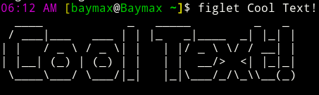

GNU/Linux Tips
How To Customize Your Bash Prompt
- Customize & Colorize Your Bash Prompt/Terminal
- Customize The Shell Prompt
- Website That Automatically Creates Your bash Prompt
My Own Bash Promt:
- PS1="\[\033[35m\]\D{%I:%M %p} \[\e[33m\][\[\033[32m\]\u\[\033[m\]@\[\033[32m\]\h \[\033[32;1m\]\w\[\e[33m\]]\[\e[00m\]$ "
Output:

Cool Software
Figlet
- It Shows Cool Text On Terminal

- Munadi
- A Simple Adan App - Deemix
- Download Deezer Music (RIP freezer :( ) mpv
- Just use it for playing any video.
My Script To Change Wallpaper on Gnome.
- Not A Software
- Here Is The Script:#!/bin/bash wallpaperdir='/home/baymax/Pictures/wallpaper' while : do pic=$(ls $wallpaperdir/* | shuf -n1) gsettings set org.gnome.desktop.background picture-uri-dark "file://$pic" pic=$(ls $wallpaperdir/* | shuf -n1) gsettings set org.gnome.desktop.background picture-uri "file://$pic" sleep 60 done- Heroic Launcher
- Play Epic Games + GOG Games on Linux! - HakuNeko!
- Read and Download Mangas!